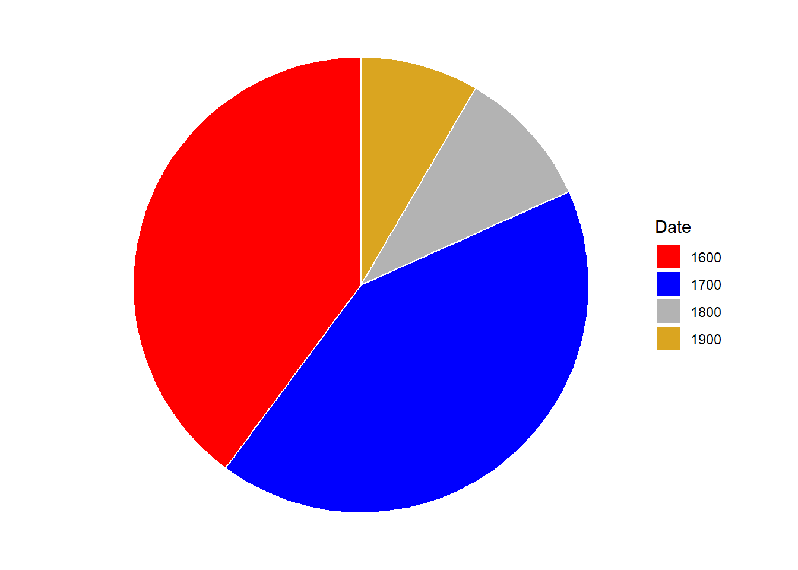
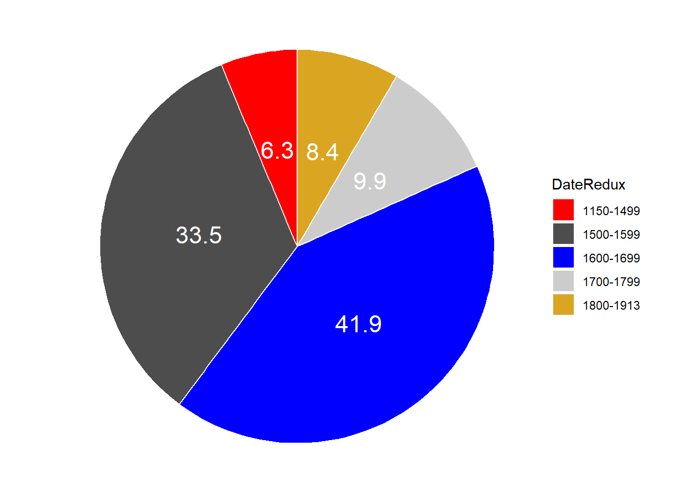
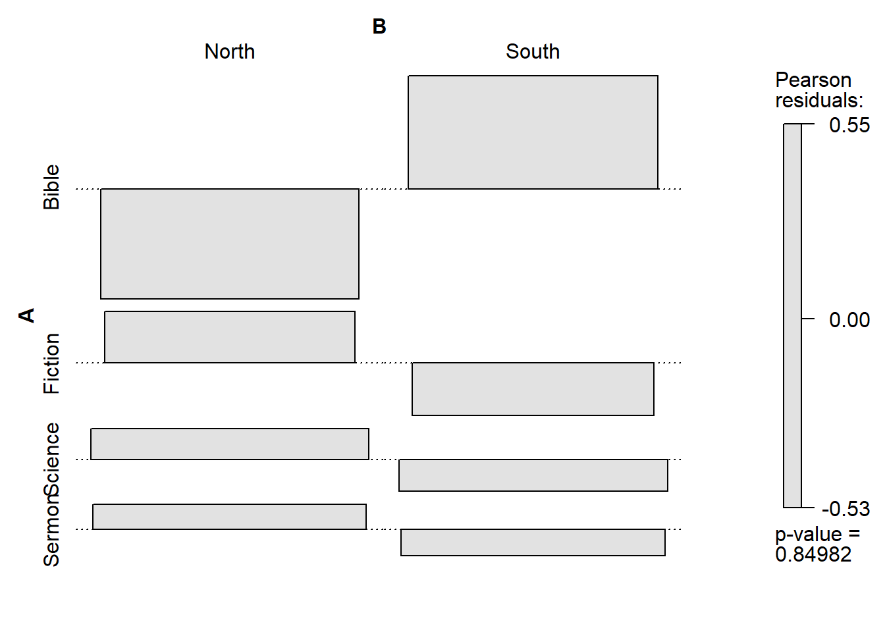
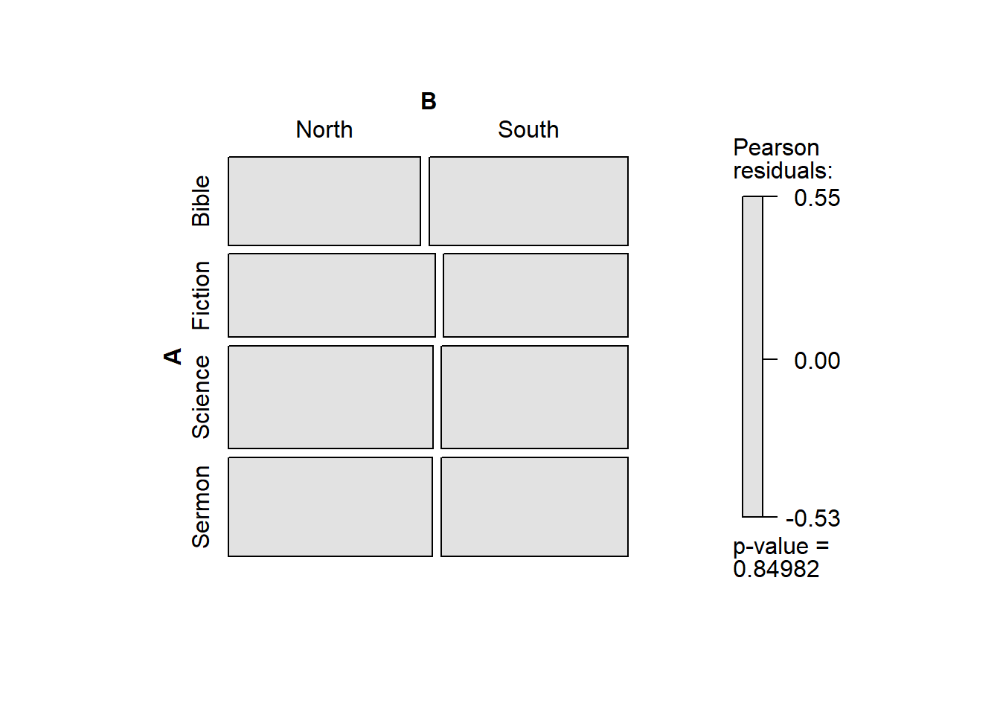
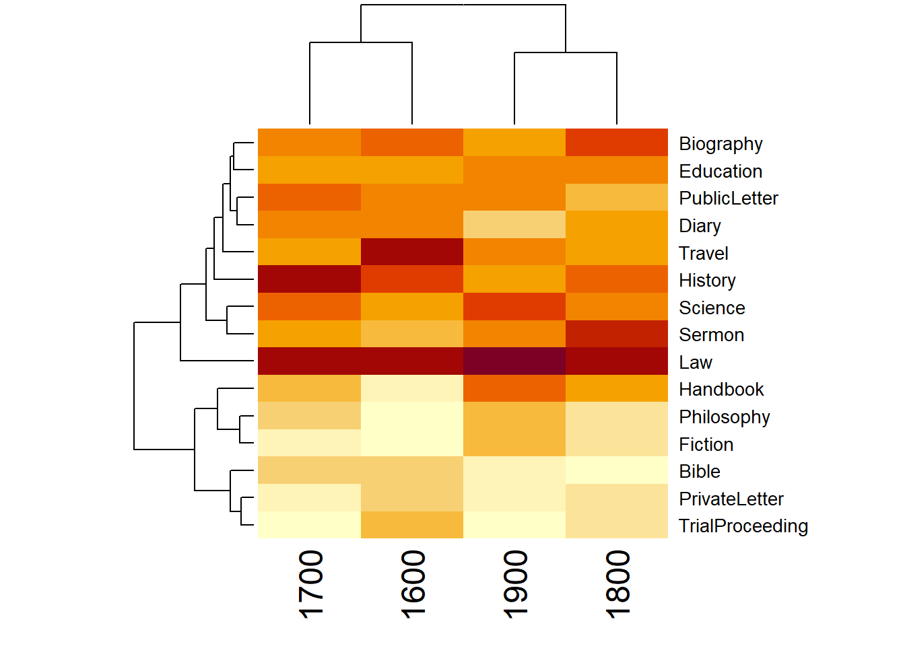
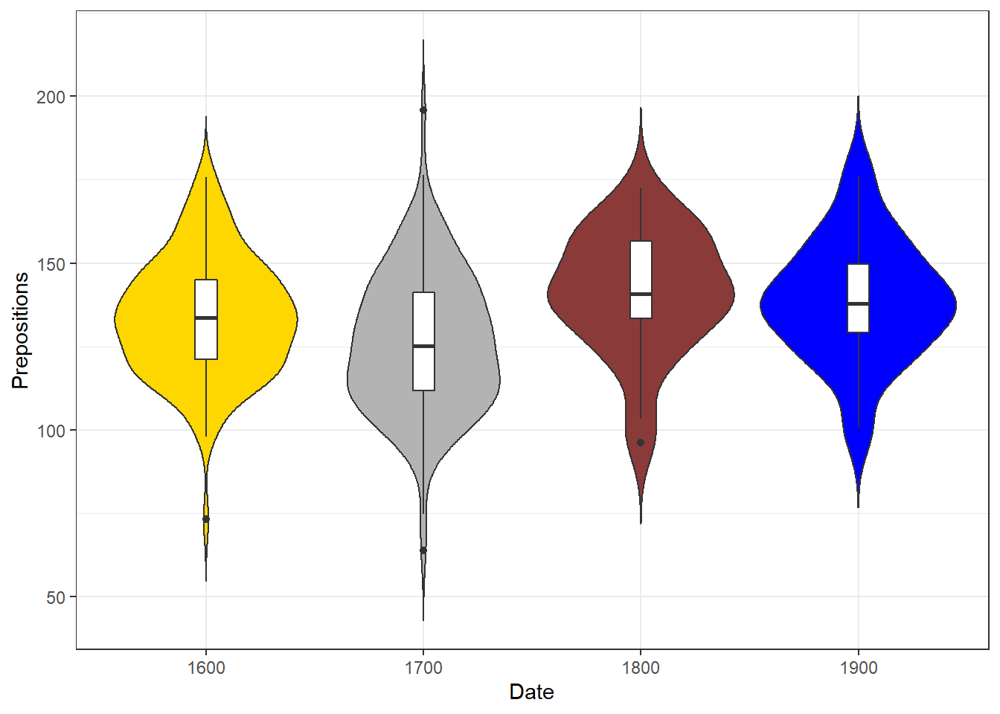
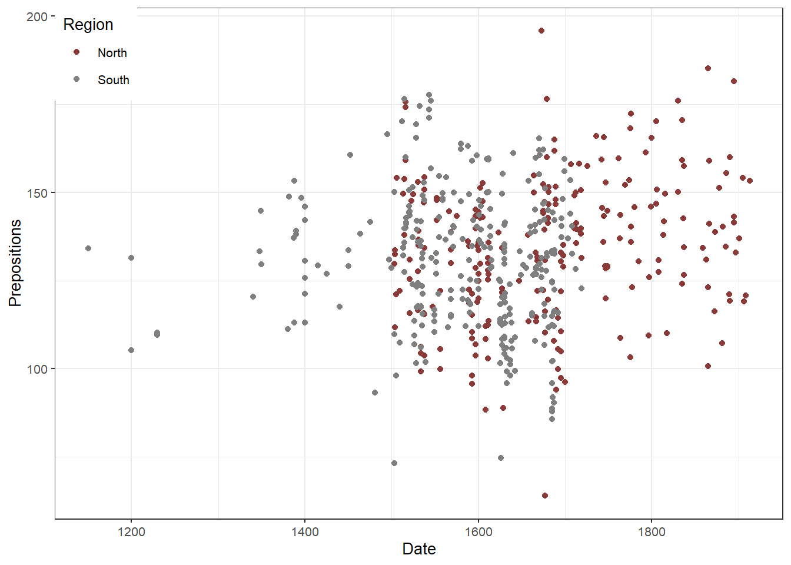
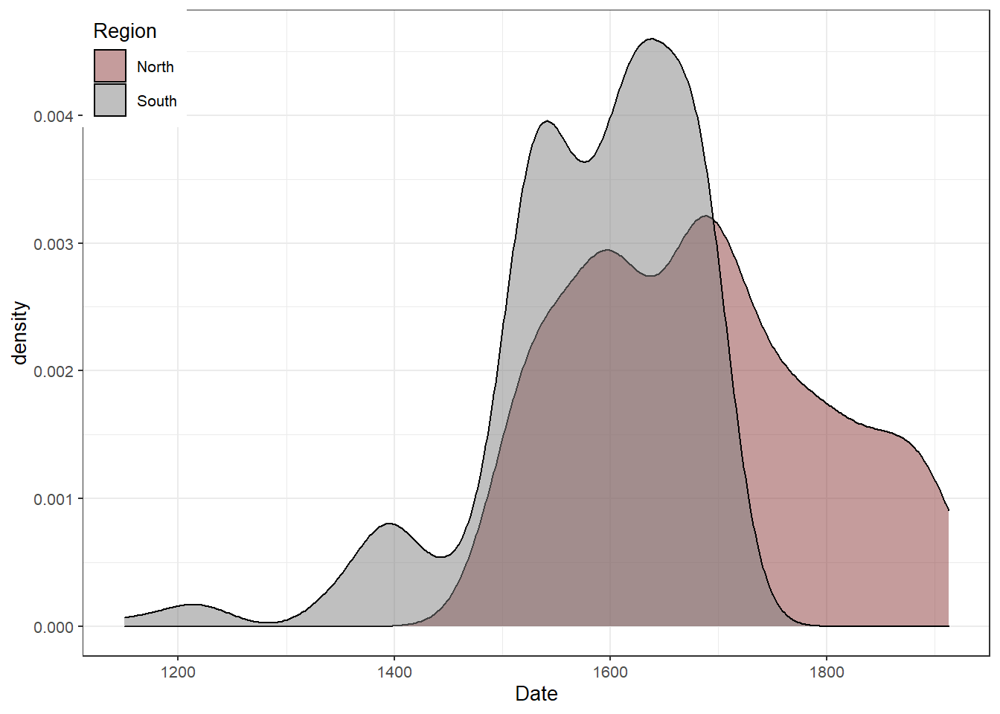

Visualizing Data with R
UQ SLC Digital Team
2019-11-30

1 Introduction
This tutorial focuses on data visualization using R. The entire code for the tutorial can be downloaded here.
When it comes to data visualization, R offers a myriad of options and ways to show and summarize data which makes R an incredibly flexible tool that offers full control over the distinct layers of plots.
Before addressing practical issues, rather general questions relating to what needs to be kept in mind when visualizing data, e.g. axes labelling, are discussed. In addition, the section discusses pros and cons of different types of graphs (scatter plots, line graphs, bar plots, histograms, pie charts, box plots and many more).
The practical part presents the code used to set up graphs so that they can be recreated and also discusses potential problems that you may encounter when setting up a graph.
As there exists a multitude of different ways to visualize data, this section can only highlight the most common types of visualization. Each type of visualization (or graph or plot) is briefly introduced followed by code which produces the type of visualization in R. This section focuses on using R when dealing with plots because R is extremely flexible when it comes to creating graphics. R is flexible in the sense that one can produce not only a huge variety of different types of visualization in R but also to modify these visualizations to match one’s individual needs. In addition, a major advantage of using R consists in the fact that the code can be store, distributed, and run very easily. This means that R represents a framework for creating graphs that enables sustainable, reproducible, and transparent procedures.
1.1 Basics of visualization
Before turning to the practical issues relating to creating graphs, a few words on what one has to keep in mind when visualizing data are in order. On a very general level, graphs should be used to inform the reader about properties and relationships between variables. This implies that…
- graphs, including axes, must be labelled properly to allow the reader to understand the visualization with ease.
- visualizations should not use more dimensions than the data has that is visualized.
- all elements within a graph should be unambiguous.
- variable scales should be portrayed accurately (for instance, lines - which imply continuity - should not be used for categorically scaled variables).
- graphs should be as intuitive as possible.
1.2 Visualization using R
A few words on different frameworks for creating graphics in R are in order. There are three frameworks in which to create graphics in R. The basic framework, the lattice framework, and the ggplot or tidyverse framework.
The basic framework is the oldest of the three and is included in the “base”-package that is automatically activated when entering R. The idea behind the “base” environment is that the creation of graphics is seen in analogy to a painter who paints on an empty canvass. Each line or element is added to the graph consecutively which oftentimes leads to code that is very comprehensible but also very long.
The lattice environment was a follow-up to the base package and it complemented it insofar as it made it much easier to display various variables and variable levels simultaneously. The philosophy of the lattice-package is quite different from the philosophy of base: whereas everything had to be specified in base, the graphs created in the lattice environment require only very little code but are therefore very easily created when one is satisfied with the design but vey labour intensive when it comes to customizing graphs. However, lattice is very handy when summarizing relationships between multiple variable and variable levels.
The ggplot environment was written by Hadley Wickham and it combines the positive aspects of both the base and the lattice package. It was first publicized in the gplot and ggplot1 packages but the latter was soon repackaged and improved in the now most widely used package for data visualization: the ggplot2 package. The ggplot environment implements a philosophy of graphic design described in builds on The Grammar of Graphics by Leland Wilkinson (Wilkinson 2012).
The philosophy of ggplot2 is to consider graphics as consisting out of basic elements (called aesthetics and they include, for instance, the data set to be plotted and the axes) and layers that overlayed onto the aesthetics. The idea of the ggplot2 package can be summarized as taking “care of many of the fiddly details that make plotting a hassle (like drawing legends) as well as providing a powerful model of graphics that makes it easy to produce complex multi-layered graphics.”
Thus, ggplots typically start with the function call (ggplot) followed by the specification of the data, then the aesthetics (aes), and then a specification of the type of plot that is created (geom_line for line graphs, geom_box for boxplots, geom_bar for bargraphs, , geom_text for text, etc.). In addition, ggplot allows to specify all elements that the graph consists of (e.g. the theme and axes)
In the following, we will start to create a couple of graphs in the base environment (and a very brief example of how create visualizations in the lattice framework) but we will then concentrate on how to create ggplot graphs.
1.3 Preparation and session set up
As all visualizations in this tutorial rely on R, it is necessary to install R and RStudio. If these programs (or, in the case of R, environments) are not already installed on your machine, please search for them in your favourite search engine and add the term “download”. Open any of the first few links and follow the installation instructions (they are easy to follow, do not require any specifications, and are pretty much self-explanatory).
In addition, certain packages need to be installed from an R library so that the scripts shown below are executed without errors. Before turning to the code below, please install the packages by running the code below this paragraph. If you have already installed the packages mentioned below, then you can skip ahead ignore this section. To install the necessary packages, simply run the following code - it may take some time (between 1 and 5 minutes to install all of the libraries so you do not need to worry if it takes some time).
# clean current workspace
rm(list=ls(all=T))
# set options
options(stringsAsFactors = F)
# install libraries
install.packages(c("lattice", "ggplot2", "dplyr", "likert",
"scales", "vcd", "tm", "wordcloud",
"stringr", "SnowballC", "tidyr"))Once you have installed R, R-Studio, and have also initiated the session by executing the code shown above, you are good to go.
1.4 Data sets
Before turning to the graphs, we will load the libraries for this tutorial and then briefly look at the structures of the data set we are working with.
# activate packages
library(knitr)
library(lattice)
library(ggplot2)
library(dplyr)
library(likert)
library(scales)
library(vcd)
library(tm)
library(wordcloud)
library(stringr)
library(SnowballC)
library(tidyr)The data set is called “lmmdata” but we will change the name to “plotdata”. The data set contains the date when the text was written (Date), the genre of the text (Genre), the name of the text (Text), the relative frequency of prepositions in the text (Prepositions), and the region in which the text was written (Region). We also inspect the structure of the data using the “str()” and the “summary()” command.
# load data
plotdata <- read.delim("https://slcladal.github.io/data/lmmdata.txt", header = TRUE)
# inspect data
str(plotdata); summary(plotdata)## 'data.frame': 537 obs. of 5 variables:
## $ Date : int 1736 1711 1808 1878 1743 1908 1906 1897 1785 1776 ...
## $ Genre : Factor w/ 16 levels "Bible","Biography",..: 13 4 10 4 4 4 3 9 9 3 ...
## $ Text : Factor w/ 271 levels "abott","albin",..: 2 6 12 16 17 20 20 24 26 27 ...
## $ Prepositions: num 166 140 131 151 146 ...
## $ Region : Factor w/ 2 levels "North","South": 1 1 1 1 1 1 1 1 1 1 ...## Date Genre Text Prepositions Region
## Min. :1150 PrivateLetter:136 stat : 20 Min. : 63.97 North:237
## 1st Qu.:1549 PublicLetter : 75 statutes: 7 1st Qu.:118.27 South:300
## Median :1625 Sermon : 35 hooker : 6 Median :132.82
## Mean :1626 History : 30 rhaddsr : 6 Mean :132.19
## 3rd Qu.:1686 Education : 29 eliz : 5 3rd Qu.:145.17
## Max. :1913 Diary : 28 roxinden: 5 Max. :195.86
## (Other) :204 (Other) :488In a next step, we attach the data which has the advantage that we do not have to specify the dataset when we want to refer to variables in the data set.
# attach plotdata
attach(plotdata)We will now turn to creating the graphs.
2 Scatter Plots
The first, and simplest graph, is a so-called scatterplot. Scatterplots are used when the graph is set up to display the relationship between two numeric variables. We will start off with creating a scatter plot in base, then in lattice and finally in the ggplot environment.
2.1 Scatter Plots in base
The most fundamental function to create plots in the base environment is to use the general “plot” function. Here, we use that function to create a simple scatter plot.
# create simple scatter plot
plot(Prepositions ~ Date, # plot Prepositions by Date
type = "p", # plot type p (points)
data = plotdata, # data from data set plotdata
ylab = "Prepositions (Frequency)", # add y-axis label
xlab = "Date (year of composition)", # add x-axis label
main = "plot type 'p' (points)" # add title
) # end drawing plot
Let us go over the command. The first part of the call is “plot” which is the function for plotting data in the “base” package. In the round brackets are the arguments in which we specify what the plot should look like. The “Prepositions ~ Date” part tells R which variables should be displayed and the “type =”p"" part tells R which type of plot we want (“p” stands for points, “l”, for lines, “b” for both lines and points). The part “data = plotdata” tells R which data set to take the data from, and “ylab =”Prepositions (Frequency)"" and “xlab =”Date (year of composition)"" informs R about the axes’ labels. The part “main =”plot type ‘p’ (points)" informs R about what we want as the main title of the plot.
In a next step, we will change the title, add two regression lines to the scatterplot (in the first case a linear and in the second case a smoothed regression line) and we will change the points as well as the colour of the points.
# create simple scatter plot with ablines
plot(Prepositions ~ Date, # plot Prepositions by Date
type = "p", # plot type p (points)
data = plotdata, # data from data set iris
ylab = "Prepositions (Frequency)", # add y-axis label
xlab = "Date (year of composition)", # add x-axis label
main = "Scatterplot", # add title
pch = 20, # use point symbol 20 (filled circles)
col = "lightgrey" # define symbol colour as light grey
) # end drawing plot
abline( # add regression line (y~x)
lm(Prepositions ~ Date), # draw regression line of linear model (lm)
col="red" # define line colour as red
) # end drawing line
lines( # add line (x,y)
lowess(Prepositions ~ Date), # draw smoothed lowess line (x,y)
col="blue" # define line colour as blue
) # end drawing line
The only things that are different in the main call are the “pch” argument with has changed the points into filled dots (this is what the 20 stands for) and the “col” argument which we have specified as “lightgrey”. The regression lines are added using the “abline” and the “lines” argument.
Exercise Time!
Load the data set called “data03” and create a simple scatterplot showing the “Variable1” on the x-axis and “Variable2” on the y-axis.
Tipp: Use the code below to load the data.
# load data03
data03 <- read.delim("https://slcladal.github.io/data/data03.txt", sep = "\t", header = T)
# show data03
data03Variable1 Variable2 1 6 67 2 65 16 3 12 56 4 56 34 5 45 54 6 84 42 7 38 36 8 46 47 9 64 54 10 24 29
2.2 Scatter Plots in lattice
We now turn to data visualization in lattice. As the lattice package is already loaded, we can create a first simple scatter plot using the “xyplot” function form the “lattice” package.
# create simple scatter plot
xyplot(Prepositions ~ Date, # plot Prepositions by Date
ylab = "Prepositions (Frequency)", # add y-axis label
xlab = "Date (year of composition)", # add x-axis label
) # end drawing plot
Since the “lattice” package was created to plot multiple relationships with a single call, we will now make use of that feature and plot multiple relationships at once. In addition, we will add a grid to the plot to improve comparability of data points within the graph.
# create scatter plots by species
xyplot(Prepositions ~ Date | Genre, # plot Prepositions by Date by Genre
ylab = "Prepositions (Frequency)", # add y-axis label
xlab = "Date (year of composition)", # add y-axis label
grid = TRUE # add grids to panels
) # end drawing plot
The only new code in the chunk above is the “| Genre” part. This part means that the relationship between Prepositions and Date should be displayed by Genre So, the |-symbol can be translated into “by”. The splitting of the plot into different panels for Genre is then done automatically.
Like in base, we can modify lattice-plots and specify, e.g. the symbols that are plotted or their colour.
# create scatter plots by species
xyplot(Prepositions ~ Date | Genre, # plot Prepositions by Date by Genre
ylab = "Prepositions (Frequency)", # add y-axis label
xlab = "Date (year of composition)", # add y-axis label
grid = TRUE, # cerate a grid
pch = 20, # symbol type (20 = filled dots)
col = "black" # color of symbols
) # end drawing plot
Next, we will use the “ggplot2”-package to create a scatter plot.
2.3 Scatter Plots in ggplot2
We now turn to data visualization using ggplot. As the ggplot2 package is already loaded, we create a very basic scatterplot in ggplot2 to show the advantages of creating visualizations in this environment.
# create simple scatter plot
ggplot(plotdata, # plot data from data set plodata
aes(x= Date, # define x-axis
y= Prepositions)) + # define y-axis
geom_point() # define plot type
Let’s go over the code above. The function call for plotting in “ggplot2” is simply “ggplot”. This function takes the data set as its first argument and then requires aesthetics. The aesthetics are defined within the “ggplot” function as the arguments of “aes”. The “aes” function takes the axes as the arguments (in the current case). Then, we need to define the type of plot that we want. As we want a scatter plot with points, we add the “geom_point()” function without any arguments (as we do not want to specify the size, colour, and shape of the points just yet).
The advantage of “ggplot2” is that is really easy to modify the plot by adding new layers and to change the basic outlook by modifying the theme which is what we will do in the code below.
# create scatter plot colored by genre
ggplot(plotdata, # plot data from data set plotdata
aes(x=Date, # define x-axis
y= Prepositions, # define y-axis
color = Genre)) + # define to color by Species
geom_point() + # define plot type
theme_bw() # define theme as black and white (bw)
The example above is intended to show that creating ggplots is can be very simple but “ggplot2” is extremely flexible and thus allows us to modify the plot in various ways. To exemplify how a ggplot may be modified, we will change the colour of the dots, add a white rather than a grey background.
# create scatter plot colored by genre
ggplot(plotdata, aes(x=Date, y= Prepositions, color = Genre)) +
geom_point() +
theme_bw() +
scale_color_manual( # define colours to be used
values = c("indianred4", "darkblue", "orange", "lightgreen", "darkgreen",
"darkgrey", "grey50", "gray80", "brown", "red",
"goldenrod", "chartreuse", "black", "lightblue",
"blueviolet", "burlywood"))
The white background is created by specifying the theme as a black and white theme (“theme_bw()”) while the colour of the dots is changed by specifying that the colour should be applied by Species (“color = Species”). Then, the colours to be used are defined in the function “scale_color_manual”.
2.4 Using symbols in scatter plots
Instead of using simple dots to represent data points, it can be useful to use symbols instead to make it easier for readers to understand what individual dots refer to. This is so because the reader does not have to take the eyes away from the graph to the legend to understand what a dot represents.
As the data is too rich for such a visualization, we will create a reduced data set so that the graph is more readily interpretable.
# modify data
plotdataredux <- plotdata %>%
dplyr::filter(Genre == "Bible" | Genre == "Fiction" | Genre == "PrivateLetter" | Genre == "Science" | Genre == "History" | Genre == "Sermon") %>%
dplyr::mutate(Date =as.numeric(Date)) %>%
droplevels() %>%
dplyr::select(-Text)
# inspect data
str(plotdataredux)‘data.frame’: 266 obs. of 4 variables: $ Date : num 1736 1808 1762 1726 1835 … $ Genre : Factor w/ 6 levels “Bible”,“Fiction”,..: 5 4 6 6 4 3 2 2 1 1 … $ Prepositions: num 166 131 160 157 124 … $ Region : Factor w/ 2 levels “North”,“South”: 1 1 1 1 1 1 1 1 1 1 …
We can now specify the symbols in the scatterplot.
# create scatter plot colored by genre
ggplot(plotdataredux, aes(Date, Prepositions, group = Genre, color = Genre)) +
geom_point(aes(y = Prepositions, shape = Genre)) +
guides(shape=guide_legend(override.aes=list(fill=NA))) +
scale_shape_manual(name = "Genre", values = c("B", "F", "H","L","S","R")) +
theme_bw() +
theme(legend.position="top")
2.5 Dot plots with error bars
In addition, we can add regression lines with error bars by Species and, if we want to show separate windows for the plots, we can use the “facet_grid” or “facet_wrap” function and define by which variable we want to create different panels.
# create scatter plot colored by genre in different panels
ggplot(plotdata, aes(Date, Prepositions, color = Genre)) +
facet_wrap(Genre, ncol = 4) +
geom_point() +
geom_smooth(method = "lm", se = F) +
theme_bw() +
theme(legend.title = element_blank(),
axis.text.x = element_text(size=8, angle=90))
If we only want to show the lines, we simply drop the “geom_point” function.
# create scatter plot colored by genre in different panels
ggplot(plotdata, aes(x=Date, y= Prepositions, color = Genre)) +
facet_wrap(Genre, ncol = 4) +
geom_smooth(method = "lm", se = F) +
theme_bw() +
theme(legend.title = element_blank(),
axis.text.x = element_text(size=8, angle=90))
Another option is to plot density layers instead of plotting the data points.
# create scatter density plot
ggplot(plotdata, aes(x=Date, y= Prepositions, color = Genre)) +
facet_wrap(Genre, ncol = 4) +
theme_bw() +
geom_density_2d() +
theme(legend.title = element_blank(),
axis.text.x = element_text(size=8, angle=90))
Although these are not scatterplots, plots with dot-symbols are very flexible and can be extended to show properties of the distribution of values. One way to create such a plot is to plot means as dot-symbols and add error bars to provide information about the underlying distribution. The plot below illustrates such a plot and additionally shows how plots can be further customized.
# scatter plot with error bars
ggplot(plotdata, aes(x=reorder(Genre, Prepositions, mean), y= Prepositions, group = Genre)) +
# add title
ggtitle("Prepositions by Genre") +
# create a dot at means
stat_summary(fun.y = mean, geom = "point",
# means by Species
aes(group= Genre)) +
# bootstrap data
stat_summary(fun.data = mean_cl_boot,
# add error bars
geom = "errorbar", width = 0.2) +
# def. y-axis range
coord_cartesian(ylim = c(100, 200)) +
# def. font size
theme_bw(base_size = 15) +
# def. x- and y-axis
theme(axis.text.x = element_text(size=10, angle = 90),
axis.text.y = element_text(size=10, face="plain")) +
# def. axes labels
labs(x = "Genre", y = "Prepositions (Frequency)") +
# def. to col.
scale_color_manual(guide = FALSE) 
In the following, we will simply go over the most common types of graphs and use examples to show what they look like and how they can be created. The main graph types we will have a look at are:
- line graphs (“geom_line” and “geom_smooth”)
- bar plots (“geom_bar”)
- boxplots (“geom_box” and “geom_violin”)
- density plots (“geom_density”)
In order to be able to use these visualizations, we will modify the data to better bring the point across.
# modify data
lineplotdata <- plotdataredux %>%
dplyr::mutate(Date = ifelse(Date < 1600, "1600",
ifelse(Date < 1700, "1700",
ifelse(Date < 1800, "1800",
ifelse(Date < 1900, "1900", "1900"))))) %>%
group_by(Date, Genre) %>%
dplyr::summarise(Mean = mean(Prepositions)) %>%
dplyr::ungroup() %>%
dplyr::mutate(Date =as.numeric(Date))
# inspect data
str(lineplotdata)Classes ‘tbl_df’, ‘tbl’ and ‘data.frame’: 24 obs. of 3 variables: $ Date : num 1600 1600 1600 1600 1600 1600 1700 1700 1700 1700 … $ Genre: Factor w/ 6 levels “Bible”,“Fiction”,..: 1 2 3 4 5 6 1 2 3 4 … $ Mean : num 125 111 147 126 136 …
We are now in a position to start creating line graphs with ggplot.
3 Line Graphs
Line graphs are used when we have numeric values that are linked (in one way or another) because they come from the same speaker or genre as in our case).
# define aesthetics
ggplot(lineplotdata, aes(x=Date, y= Mean, color = Genre)) +
# add geom layer with lines
geom_line()
3.1 Smoothed line graphs
Another very useful function when creating line graphs with “ggplot” is “geom_smooth” which smoothes the lines to be drawn.
# define aesthetics
ggplot(lineplotdata, aes(x=Date, y= Mean, color = Genre, linetype = Genre)) +
# add geom layer with lines
geom_smooth()
As this smoothed line graph is extremely useful, we will customize it to show how to modify your graph.
# define aesthetics
ggplot(lineplotdata, aes(x=Date, y= Mean, color = Genre, linetype = Genre)) +
# add geom layer with lines
geom_smooth() +
# legend without background color
guides(color=guide_legend(override.aes=list(fill=NA))) +
# def. legend position
theme(legend.position="top") +
# def. linetype
scale_linetype_manual(values=c("longdash", "twodash", "dashed",
"dotdash", "dotted", "solid"),
# def. legend header
name=c("Genre"),
# def. linetypes
breaks = c("Bible", "Fiction", "History",
"PrivateLetter", "Science", "Sermon"),
# def. labels
labels = c("Bible", "Fiction", "History",
"Private letter", "Science", "Sermon")) +
# def. col.
scale_colour_manual(values=c("goldenrod2", "gray30", "blue",
"burlywood", "gray80", "indianred4"),
# define legend header
name=c("Genre"),
# define elements
breaks=c("Bible", "Fiction", "History",
"PrivateLetter", "Science", "Sermon"),
# define labels
labels = c("Bible", "Fiction", "History",
"Private letter", "Science", "Sermon")) +
# add x-axis label
labs(x = "Year") +
# customize x-axis tick positions
scale_x_continuous(breaks=seq(1600, 1900, 100),
# add labels to x-axis tick pos.
labels=seq(1600, 1900, 100)) +
# add y-axis label
scale_y_continuous(name="Relative frequency \n(per 1,000 words)",
# customize tick y-axis
limits=c(100, 200)) +
# define theme as black and white
theme_set(theme_bw(base_size = 10)) 
Although the code for the customized smoothed line graph is much longer and requires addition specifications, it is a very nice way to portrait the development over time.
3.2 Line graphs for Likert-scaled data
A special case of line graphs is used when dealing with Likert-scaled variables. In such cases, the line graph displays the density of cumulative frequencies of responses. The difference between the cumulative frequencies of responses displays differences in preferences. We will only focus on how to create such graphs using the “ggplot” environment here as it has an inbuild function (“ecdf”) which is designed to handle such data.
In a first step, we create a data set which consists of a Likert-scaled variable. The fictitious data created here consists of rating of students from three courses about how satisfied they were with their language-learning course. The response to the Likert item is numeric so that “strongly disagree/very dissatisfied” would get the lowest and “strongly agree/very satisfied” the highest numeric value.
# create lickert data
likertdata <- data.frame(Course=
c(rep(c("Chinese",
"German",
"Japanese"),
each = 100)),
Satisfaction=
c(c(rep(1, 20),
rep(2, 30),
rep(3, 25),
rep(4, 10),
rep(5, 15)),
c(rep(1, 40),
rep(2, 25),
rep(3, 15),
rep(4, 15),
rep(5, 5)),
c(rep(1, 10),
rep(2, 15),
rep(3, 20),
rep(4, 25),
rep(5, 30))))
# inspect data
head(likertdata)## Course Satisfaction
## 1 Chinese 1
## 2 Chinese 1
## 3 Chinese 1
## 4 Chinese 1
## 5 Chinese 1
## 6 Chinese 1Now that we have data resembling a Likert-scaled item from a questionnaire, we will display the data in a cumulative line graph.
# create cumulative density plot
ggplot(likertdata,aes(x = Satisfaction, color = Course)) +
geom_step(aes(y = ..y..), stat = "ecdf") +
labs(y = "Cumulative Density") +
scale_x_discrete(limits = c("1","2","3","4","5"), breaks = c(1,2,3,4,5),
labels=c("very dissatisfied", "dissatisfied", "neutral", "satisfied", "very satisfied")) +
scale_colour_manual(values = c("goldenrod2", "indianred4", "blue")) 
The satisfaction of the German course was the lowest as the red line shows the highest density (frequency of responses) of “very dissatisfied” and “dissatisfied” ratings. The students in our fictitious data set were most satisfied with the Chinese course as the blue line is the lowest for “very dissatisfied” and “dissatisfied” ratings while the difference between the courses shrinks for “satisfied” and “very satisfied”. The Japanese language course is in-between the German and the Chinese course.
4 Pie charts
Most commonly, the data for visualization comes from tables of absolute frequencies associated with a categorical or nominal variable. The default way to visualize such frequency tables are pie charts and bar plots.
In a first step, we modify the original data to get counts and percentages. The data represents the number of documents per time period and the percentage of those documents across all time periods.
# create bar plot data
bardata <- plotdata %>%
dplyr::mutate(Date = ifelse(Date < 1600, "1600",
ifelse(Date < 1700, "1700",
ifelse(Date < 1800, "1800",
ifelse(Date < 1900, "1900", "1900"))))) %>%
dplyr::mutate(Date = factor(Date)) %>%
group_by(Date) %>%
dplyr::summarise(Frequency = n()) %>%
dplyr::mutate(Percent = round(Frequency/sum(Frequency)*100, 1))
# inpsect data
head(bardata)Before creating bar plots, we will briefly turn to pie charts because pie charts are very common despite suffering from certain shortcomings. Consider the following example which highlights some of the issues that arise when using pie charts.
# create pie chart
ggplot(bardata, aes("", Percent, fill = Date)) +
geom_bar(stat="identity", width=1, color = "white") +
coord_polar("y", start=0) +
scale_fill_manual(values = c("red", "blue", "gray70", "goldenrod")) +
theme_void()
If the slices of the pie chart are not labelled, it is difficult to see which slices are smaller or bigger compared to other slices. This problem can easily be avoided when using a bar plot instead.
The labelling of pie charts is, however, somewhat tedious as the positioning is tricky. Below is an example for adding labels without specification.
# create pie chart
ggplot(bardata, aes("", Percent, fill = Date)) +
geom_bar(stat="identity", width=1, color = "white") +
coord_polar("y", start=0) +
scale_fill_manual(values = c("red", "blue", "gray70", "goldenrod")) +
theme_void() +
geom_text(aes(y = Percent, label = Percent), color = "white", size=6)
To place the labels where they make sense, we will add another variable to the data called “Position”.
piedata <- bardata %>%
dplyr::arrange(desc(Date)) %>%
dplyr::mutate(Position = cumsum(Percent)- 0.5*Percent)Now that we have specified the position, we can include it into the pie chart.
# create pie chart
ggplot(piedata, aes("", Percent, fill = Date)) +
geom_bar(stat="identity", width=1, color = "white") +
coord_polar("y", start=0) +
scale_fill_manual(values = c("red", "blue", "gray70", "goldenrod")) +
theme_void() +
geom_text(aes(y = Position, label = Percent), color = "white", size=6)
5 Bar plots
Like pie charts, bar plot display frequency information across categorical variable levels.
# bar plot
ggplot(bardata, aes(Date, Percent, fill = Date)) +
geom_bar(stat="identity") + # determine type of plot
theme_bw() + # use black & white theme
# add and define text
geom_text(aes(y = Percent-5, label = Percent), color = "white", size=3) +
# add colors
scale_fill_manual(values = c("red", "blue", "gray70", "goldenrod")) +
# supress legend
theme(legend.position="none")
Compared with the pie chart, it is much easier to grasp the relative size and order of the percentage values which shows that pie charts are unfit to show relationships between elements in a graph and, as a general rule of thumb, should be avoided.
5.1 Grouped Bar plots
Bar plot can be grouped to add another layer of information which is particularly useful when dealing with frequency counts across multiple categorical variables. But before we can create grouped bar plots, we need to create an appropriate data set.
# create bar plot data
newbardata <- plotdata %>%
dplyr::filter(Genre == "PrivateLetter" | Genre == "PublicLetter" | Genre == "Science" | Genre == "History" | Genre == "Sermon") %>%
dplyr::mutate(Date = ifelse(Date < 1600, "1600",
ifelse(Date < 1700, "1700",
ifelse(Date < 1800, "1800",
ifelse(Date < 1900, "1900", "1900"))))) %>%
dplyr::mutate(Date = factor(Date)) %>%
group_by(Date, Genre) %>%
dplyr::summarise(Frequency = n())
# inpsect data
head(newbardata)We have now added Genre as an additional categorical variable and will include Genre as the “fill” argument in our bar plot. To group the bars, we use the command “position=position_dodge()”.
# bar plot
ggplot(newbardata, aes(Date, Frequency, fill = Genre)) +
geom_bar(stat="identity", position = position_dodge()) +
theme_bw() 
If we leave out the “position=position_dodge()” argument, we get a stacked bar plot as shown below.
# bar plot
ggplot(newbardata, aes(Date, Frequency, fill = Genre)) +
geom_bar(stat="identity") +
theme_bw() 
One issue to consider when using stacked bar plots is the number of variable levels: when dealing with many variable levels, stacked bar plots tend to become rather confusing. This can be solved by either collapsing infrequent variable levels or choose a colour palette that reflects some other inherent piece of information such as formality (e.g. blue) versus informality (e.g. red).
Stacked bar plots can also be normalized so that changes in percentages become visible. This is done by exchanging “position=position_dodge()” with “position=”“fill”".
# bar plot
ggplot(newbardata, aes(Date, Frequency, fill = Genre)) +
geom_bar(stat="identity", position="fill") +
theme_bw() 
5.2 Bar plots for Likert data
Bar plots are particularly useful when visualizing data obtained through Likert items. As this is a very common issue that empirical researchers face. There are two basic ways to display Likert items using bar plots: grouped bar plots and more elaborate scaled bar plots.
Although we have seen above how to create grouped bar plots, we will repeat it here with the language course example used above when we used cumulative density line graphs to visualise how to display Likert data.
In a first step, we recreate the data set which we have used above. The data set consists of a Likert-scaled variable (Satisfaction) which represents rating of students from three courses about how satisfied they were with their language-learning course. The response to the Likert item is numeric so that “strongly disagree/very dissatisfied” would get the lowest and “strongly agree/very satisfied” the highest numeric value.
# create likert data
newlikertdata <- likertdata %>%
group_by(Course, Satisfaction) %>%
mutate(Frequency = n())
newlikertdata <- unique(newlikertdata)
# inspect data
head(newlikertdata)## # A tibble: 6 x 3
## # Groups: Course, Satisfaction [6]
## Course Satisfaction Frequency
## <fct> <dbl> <int>
## 1 Chinese 1 20
## 2 Chinese 2 30
## 3 Chinese 3 25
## 4 Chinese 4 10
## 5 Chinese 5 15
## 6 German 1 40Now that we have data resembling a Likert-scaled item from a questionnaire, we will display the data in a cumulative line graph.
# create grouped bar plot
ggplot(newlikertdata, aes(Satisfaction, Frequency, fill = Course)) +
geom_bar(stat="identity", position=position_dodge()) +
# define colors
scale_fill_manual(values=c("goldenrod2", "gray70", "indianred4")) +
# add text and define colour
geom_text(aes(label=Frequency), vjust=1.6, color="white",
# define text position and size
position = position_dodge(0.9), size=3.5) +
scale_x_discrete(limits=c("1","2","3","4","5"), breaks=c(1,2,3,4,5),
labels=c("very dissatisfied", "dissatisfied", "neutral", "satisfied",
"very satisfied")) +
theme_bw()
Another and very interesting way to display such data is by using the Likert package. In a first step, we need to activate the package, clean the data, and extract a subset for the data visualization example.
# load data
data(pisaitems) # use a provided dataset called pisaitems
# extract subset from data for visualization
items28 <- pisaitems[, substr(names(pisaitems), 1, 5) == "ST24Q"]
# transform into a likert object
questionl28 <- likert(items28)
# summarize data
summary(questionl28) After extracting a sample of the data, we plot it to show how the Likert data can be displayed.
# plot likert data
plot(questionl28)
5.3 Comparative bar plots with negative values
Another frequent task is to evaluate the divergence of values from a reference, for instance when dealing with language learners where native speakers serve as a reference or target. To illustrate how such data can be visualized, we load the scales package as we want to create a bar plot in which we show the divergence of learners from native speakers regarding certain features and how that divergence changes over time. Then, we create an example data set which mirrors the format we expect for the actual data.
# create a vector with values called Test1
Test1 <- c(11.2, 13.5, 200, 185, 1.3, 3.5)
# create a vector with values called Test2
Test2 <- c(12.2, 14.7, 210, 175, 1.9, 3.0)
# create a vector with values called Test3
Test3 <- c(13.2, 15.1, 177, 173, 2.4, 2.9)
# combine vectors in a data frame
testdata <- data.frame(Test1, Test2, Test3)
# add rownames
rownames(testdata) <- c("Feature1_Student",
"Feature1_Reference",
"Feature2_Student",
"Feature2_Reference",
"Feature3_Student",
"Feature3_Reference")
# inspect data
testdata We can now determine how the learners deviate from the native speakers.
# determine divergence from reference
# row 1 (student) minus row 2 (reference)
FeatureA <- t(testdata[1,] - testdata[2,])
# row 3 (student) minus row 4 (reference)
FeatureB <- t(testdata[3,] - testdata[4,])
# row 5 (student) minus row 6 (reference)
FeatureC <- t(testdata[5,] - testdata[6,])
# create data frame
plottable <- data.frame(rep(rownames(FeatureA), 3),
c(FeatureA, FeatureB, FeatureC),
c(rep("FeatureA", 3),
rep("FeatureB", 3),
rep("FeatureC", 3)))
# def. col. names
colnames(plottable) <- c("Test", "Value", "Feature")
# inspect data
plottable Finally, we graphically display the divergence using a bar plot.
# create plot
ggplot(plottable,
aes(Test, Value)) + # def. x/y-axes
# separate plots for each feature
facet_grid(vars(Feature), scales = "free_y") +
# create bars
geom_bar(stat = "identity", aes(fill = Test)) +
# black and white theme
theme_bw() +
# supress legend
guides(fill=FALSE) +
# def. colours
geom_bar(stat="identity", fill=rep(c("goldenrod2",
"gray70",
"indianred4"), 3)) +
# axes titles
labs(x = "", y = "Score") 
6 Association plots
Another plot type that is related to bar plots is the association plot. Association plots are similar to bar plots in that they display difference as bars above or below a line (as shown above). However, association plots show the difference between the observed and expected frequencies rather than differences as deviations from a reference. Therefore, they are often used when graphically representing tables with absolute frequencies. We use the already loaded vcd package to create association plots.
We also modify the reduced plotdata as association plots work on matrices rather than data frames or tibbles. In addition, we will drop more genres as to avoid overlap in the y-axis labels later on.
# reduce data
assocdata <- plotdataredux %>%
dplyr::filter(Genre != "PrivateLetter", Genre != "History") %>%
droplevels() %>%
group_by(Genre, Region) %>%
dplyr::summarise(Prepositions = round(mean(Prepositions), 0)) %>%
tidyr::spread(Region, Prepositions)
# create matrix
assocmx <- as.matrix(assocdata[,2:3])
attr(assocmx, "dimnames")[1] <- as.vector(assocdata[,1])
# inspect data
assocmx North SouthBible 121 125 Fiction 122 109 Science 149 136 Sermon 144 132
Association plots are created by using the “assoc” function which takes a table (or a similar format such as a matrix or a data frame) as their argument. In addition, we specify “shade” as “T” in order to colour code the bars in the association plot and to add a legend.
# create association plot
assoc(assocmx, shade=TRUE)
The bars above the line indicate that the observed frequency is higher than expected, bars under the line indicate frequencies that are lower than expected. However, the lack of colouring strongly suggests that there are no significant differences between the observed and the expected frequencies which means that genre is unlikely to have a significant effect of the frequency of prepositions.
7 Mosaic plots
Another plot which is useful to graphically depict the relationship of categorical variables is the mosaic plot. The size of the boxes in a mosaic plot indicate how frequent that subcategory is and the colours show whether or not the category differs from the value that is expected if given the overall distribution in the table. In addition, the hue of the colour shows how great the difference between observed and expected is and thus indicates whether the respective subcategory deviates significantly from the expected frequency.
# create a mosaic plot
mosaic(assocmx, shade=T, legend=TRUE) 
According to the mosaic plot above, there are neither significant differences in the number of observations (the boxes are similar in size and shape) and that genre does not have a significant effect on the frequency of prepositions as the boxes are grey and not coloured.
8 Heat maps
Heat maps are similar to mosaic plots in that they display frequency information and use color-coding to indicate high and low values. Heat maps also work on matrices but they are much more powerful and versatile that mosaic plots.
Heat maps are a very popular way to display frequency information and various packages have been written to create or customize heatmaps (for example the packages “ComplexHeatmap”, “dendextend”, “d3heatmap”, “pheatmap”) which means that many aspects of heatmaps can be modified. In this example, we will only use the most basic function to create a heat map.
We again modify the data and create a matrix from the original plotdata. In addition, we scale the frequencies. This is not necessary in the present case but when dealing with variables which differ in their mean and variance because they reflect different variables, scaling will normalize such variables and render their values comparable.
# create data
heatdata <- plotdata %>%
dplyr::select(Genre, Date, Prepositions) %>%
dplyr::mutate(Date = ifelse(Date < 1600, "1600",
ifelse(Date < 1700, "1700",
ifelse(Date < 1800, "1800",
ifelse(Date < 1900, "1900", "1900"))))) %>%
group_by(Date, Genre) %>%
dplyr::summarise(Prepositions = round(mean(Prepositions), 0)) %>%
tidyr::spread(Date, Prepositions) %>%
dplyr::filter(Genre != "Religion")
# create matrix
heatmx <- as.matrix(heatdata[,2:5])
attr(heatmx, "dimnames")[1] <- as.vector(heatdata[,1])
heatmx <- scale(heatmx)
# inspect data
heatmx 1600 1700 1800 1900Bible -0.5456676 -0.75004830 -1.60542979 -1.13925944 Biography 0.5641648 0.51482605 0.93782532 -0.04847913 Diary 0.4948003 0.44825372 -0.09537207 -0.53327038 Education 0.2173422 -0.08432496 0.30201154 0.31511431 Fiction -1.5167710 -1.41577165 -1.04909273 -0.35147366 Handbook -1.2393129 -0.35061430 0.06358138 0.61810885 History 0.9803520 1.71312808 0.69939515 0.01211978 Law 1.6046327 1.57998341 1.81206926 2.25427932 Philosophy -1.5861355 -0.75004830 -0.89013929 -0.41207256 PrivateLetter -0.4763031 -1.21605465 -1.12856945 -1.26045726 PublicLetter 0.3560712 0.71454306 -0.17484879 0.25451541 Science 0.2173422 0.78111539 0.54044171 1.04230119 Sermon -0.3375740 0.18196438 1.49416238 0.55750994 Travel 1.6046327 0.11539205 0.06358138 0.49691103 TrialProceeding -0.3375740 -1.48234398 -0.96961601 -1.80584741 attr(,“scaled:center”) 1600 1700 1800 1900 132.8667 133.2667 141.2000 139.8000 attr(,“scaled:scale”) 1600 1700 1800 1900 14.41659 15.02125 12.58230 16.50195
Now that we have created a data matrix, we can cerate a simple heat map.
# create heat map
heatmap(heatmx, scale = "none")
The dendrogram on the top shows that documents from 1600 and 1700 as well as documents from 1800 and 1900 are grouped together and thus are more similar with respect to their preposition frequencies. The dendrogram on the left indicates that we have two categories of documents: the genres to towards the bottom tend to have fewer prepositions (indicated by the light colours) while the documents to the top tend to have more prepositions (thus the darker hues). Legal texts (genre = Law) have notably higher rates of prepositions as is derivable from the dark red colour of such texts.
9 Boxplots
So far, we have plotted values but we have not plotted the underlying distributions. For instance, we have plotted mean values but not the variance within the distribution. One handy way to combine plotting general trends and their underlying distributions are boxplots.
Boxplots, or Box-and-Whisker Plots, are exploratory graphics first created by John W. Tukey and they show the relationships between categorical and numeric variables. They are very useful because they not only provide measures of central tendency (the median which is the line in the middle of the box) but they also offer information about the distribution of the data. To elaborate, fifty percent of data points fall within the box while seventy-five percent of data points fall within the whiskers (the lines which look like extended error bars): the box thus encompasses the interquartile range between the first and third quartile. The whiskers show the minimum and maximum values in the data and only outliers (data points that lie 1.5 times the interquartile range or more above the third quartile or 1.5 times the interquartile range or more below the first quartile. If the whiskers differ in length, then this means that the data is asymmetrically distributed.
# create data
boxdata <- plotdata %>%
dplyr::filter(Genre == "PrivateLetter" | Genre == "PublicLetter" | Genre == "Science" | Genre == "History" | Genre == "Sermon") %>%
dplyr::mutate(Date = ifelse(Date < 1600, "1600",
ifelse(Date < 1700, "1700",
ifelse(Date < 1800, "1800",
ifelse(Date < 1900, "1900", "1900")))))%>%
dplyr::mutate(Date = factor(Date))
# inspect data
head(boxdata)Date Genre Text Prepositions Region 1 1800 Science albin 166.01 North 2 1900 PrivateLetter austen 130.78 North 3 1800 Sermon burton 159.71 North 4 1800 Sermon butler 157.49 North 5 1900 PrivateLetter carlyle 124.16 North 6 1900 History carlyle 134.48 North
We will now create simple boxplots that show the distribution of prepositions per time period.
# create boxplot
ggplot(boxdata, aes(Date, Prepositions, color = Genre)) +
geom_boxplot(fill=c("gold", "gray70", "indianred4", "blue"), color="black") 
Another interesting feature of boxplots is that they allow us to visually get an idea whether categories differ significantly. Because if add “notch = T” and the notches of the boxplots do not overlap, then this is a very strong indication that the categories actually differ significantly (see below).
# create boxplot
ggplot(boxdata, aes(Date, Prepositions, color = Genre)) +
geom_boxplot(outlier.colour="red", outlier.shape=2, outlier.size=5,
notch=T, fill=c("gold", "gray70", "indianred4", "blue"),
color="black") 
10 Violin plots
An alternative to boxplots which display the distribution within the data even more accurately are violin plots.
# create violin plot
ggplot(boxdata, aes(Date, Prepositions, fill = Date)) +
geom_violin(trim = FALSE) +
geom_boxplot(width=0.1, fill="white") +
scale_fill_manual(values = c("gold", "gray70", "indianred4", "blue")) +
theme_bw() +
theme(legend.position = "none") 
11 Density Plots
Another way to visualize the distribution of the data with respect to numeric variables are density plots or Kernel Density Plots. Density plots smooth the data using so-called kernel smoothing to even out the distribution of frequencies along the lines of a numeric or interval variable. The peaks of density plots help display where values are concentrated over the interval. To show the relationship between the variable and the density plot, we will first create a scatter plot and then create a density plot of the variable displayed on the x-axis of the scatter plot.
# create dot plot
ggplot(plotdata, aes(x = Date, y = Prepositions, color=Region)) +
geom_point() +
scale_color_manual(values = c("indianred4", "gray50")) +
theme(legend.position=c(0,1), legend.justification=c(0,1)) 
We will now create a marginal density plot of Date (x-axis) to show when texts from the north and south were particularly common.
# create dot plot
ggplot(plotdata, aes(Date, fill=Region)) +
geom_density(alpha=.5) +
scale_fill_manual(values = c("indianred4", "gray50")) +
theme(legend.position=c(0,1), legend.justification=c(0,1)) 
The density plot shows that the texts differ substantially with respect to where they were written as the distribution of texts written in southern Britain continues way into the 19th century while we onyl have texts written in north until about 1800.
12 Word clouds
Word clouds visualize word frequencies of either single corpus or different corpora. Although word clouds are rarely used in academic publications, they are a common way to display language data and the topics of texts - which may be thought of as their semantic content. To exemplify how to use word clouds, we are going to have a look at rally speeches of Hillary Clinton and Donald Trump that were given during their 2016 campaigns. In a first step, we load and process the data as the relevant packages are already loaded.
# load and process speeches by clinton
clinton <- readLines("https://slcladal.github.io/data/Clinton.txt") %>%
paste(sep = " ", collapse = " ")
# load and process speeches by trump
trump <- readLines("https://slcladal.github.io/data/Trump.txt") %>%
paste(sep = " ", collapse = " ")After loading the data, we need to clean it.
# clean texts
docs <- Corpus(VectorSource(c(clinton, trump))) %>%
tm_map(removePunctuation) %>%
tm_map(removeNumbers) %>%
tm_map(tolower) %>%
tm_map(removeWords, stopwords("english")) %>%
tm_map(stripWhitespace) %>%
tm_map(PlainTextDocument)
# create term document matrix
tdm <- TermDocumentMatrix(docs) %>%
as.matrix()
colnames(tdm) <- c("Clinton","Trump")Next, we normalize the absolute frequencies of the terms in the document by converting them into relative frequencies.
# calculate rel. freq.
tdm[, 1] <- as.vector(unlist(sapply(tdm[, 1], function(x) round(x/colSums(tdm)[1]*1000, 0) )))
# calculate rel. freq.
tdm[, 2] <- as.vector(unlist(sapply(tdm[, 2], function(x) round(x/colSums(tdm)[2]*1000, 0) )))After processing the data, we can now create word clouds. However, there are different word clouds:
- (Common) word clouds
- Comparative clouds
- Commonality clouds
Common or simple word clouds simply show the frequency of word types while comparative word clouds show which word types are particularly overrepresented in one sub-corpus compared to another sub-corpus. Commonality word clouds show words that are shared and are thus particularly indistinctive for different sub-corpora.
Let us first inspect a common word cloud of the corpus.
# create word cloud
wordcloud(docs, max.words = 100,
colors = brewer.pal(6, "BrBG"),
random.order = FALSE)
The common word cloud shows the frequencies of words regardless of who used them. In contrast, the comparative cloud shown below highlights words that differ most with respect to their frequencies in the sub-corpora under investigation.
# create comparison cloud
comparison.cloud(tdm,
max.words = 100,
random.order = FALSE,
colors = c("blue", "red"),
title.bg.colors="white",
bg.color = "black")
The opposite of comparative clouds are commonality clouds which highlight words that use with similar relative frequencies in the sub-corpora under investigation and that are therefore particularly indistinctive.
# create commonality cloud
commonality.cloud(tdm,
max.words = 100,
random.order = FALSE,
colors = brewer.pal(6, "Spectral"))
At first, I thought that word clouds are simply a fancy but not very helpful way to inspect language data but I have to admit that word clouds really surprised me as they do appear to possess potential to provide an idea of what groups of people are talking about. The comparative word cloud shows that the Trump uses a lot of contractions (“’re”, “’ll”, etc.) and stresses concepts linked to the future (“going”) thereby stressing his vision of the US (great). In Contrast, Clinton did not use contractions but talked about “Americans”, “work”, the “economy”, and “women”.
References
Wilkinson, Leland. 2012. “The Grammar of Graphics.” In Handbook of Computational Statistics, 375–414. Springer.